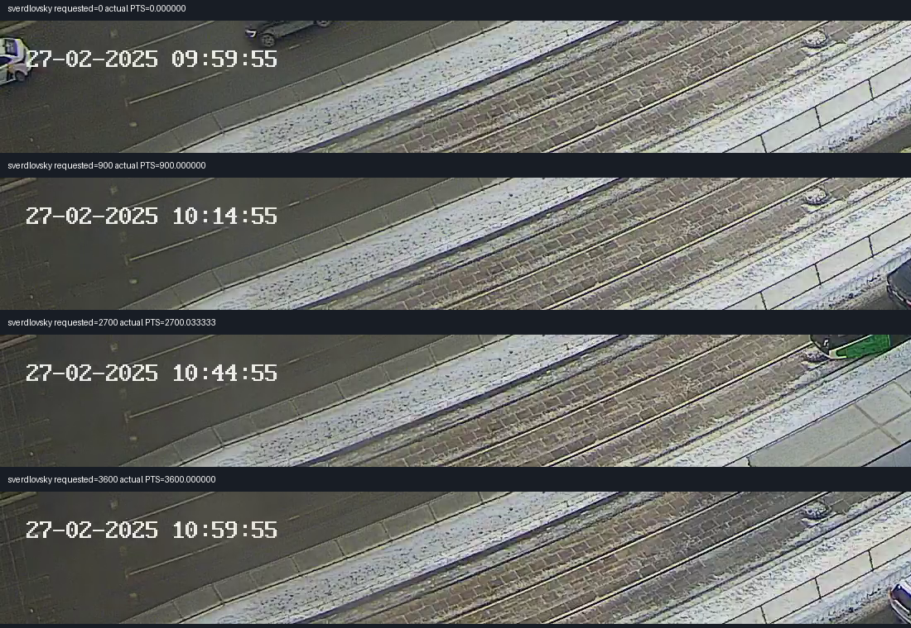
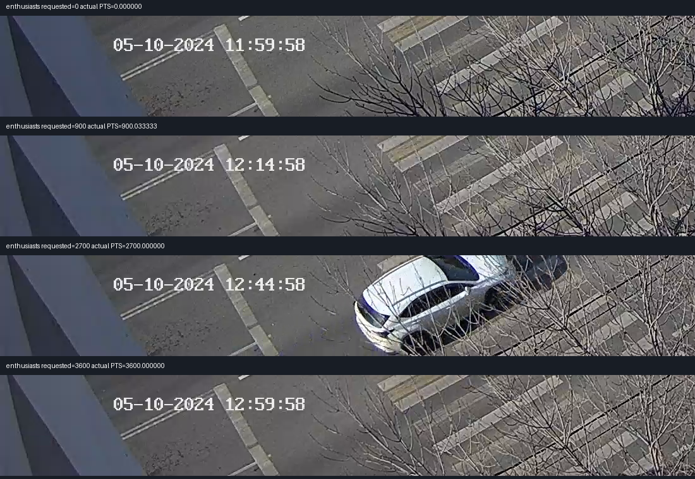

Для Свердловского, при прямой привязке JSON к часам камеры, оценка зелёного запаздывает примерно на 3.9 с, красного — на 4.9 с. Два постоянных сдвига вычислены на PTS900–1500с. На отдельном участке PTS2700–3300с они проверены без повторного подбора.
Ключевое ограничение: абсолютная связь video PTS ↔ detections[].millis ещё не подтверждена независимой машиной/кадром. Поправка объединяет задержку модели и возможное расхождение часов. Эти числа нельзя выдавать за доказанную физическую точность или переносить в приложение как проверенную калибровку. Production не менялся.
Открыть исходное видео рядом с прогнозом до/после условной поправки. На странице выберите исходный MP4 Свердловского; файл остаётся локальным.
Видимые часы секундные. Время соседних исходных кадров позволяет задавать доли секунды в координатах видео, но точность абсолютного совмещения с JSON этим не доказывается.


| JSON | Начало detections, UTC+5 | Конец detections, UTC+5 | Треков |
|---|---|---|---|
| 17_2025_2_27_10.json | 2025-02-27T09:59:12.906000+05:00 | 2025-02-27T10:59:59.159000+05:00 | 3931 |
| 17_2025_2_27_11.json | 2025-02-27T10:59:08.705000+05:00 | 2025-02-27T11:59:58.412000+05:00 | 4012 |
| 17_2025_2_27_12.json | 2025-02-27T11:59:20.427000+05:00 | 2025-02-27T12:59:55.633000+05:00 | 3661 |
| 6_2025_2_23_13.json | 2025-02-23T13:50:40.994000+05:00 | 2025-02-23T13:59:58.973000+05:00 | 245 |
| 6_2025_2_23_14.json | 2025-02-23T13:58:57.463000+05:00 | 2025-02-23T14:59:59.343000+05:00 | 1817 |
| 6_2025_2_23_15.json | 2025-02-23T14:56:18.720000+05:00 | 2025-02-23T15:59:58.776000+05:00 | 2370 |
| 6_2025_2_23_16.json | 2025-02-23T15:58:26.115000+05:00 | 2025-02-23T16:59:59.609000+05:00 | 2298 |
| 6_2025_2_23_17.json | 2025-02-23T16:56:50.906000+05:00 | 2025-02-23T17:59:59.746000+05:00 | 2243 |
| 6_2025_2_23_18.json | 2025-02-23T17:58:13.544000+05:00 | 2025-02-23T18:30:53.708000+05:00 | 1144 |
Свердловскому соответствуют прежде всего JSON17_..._10 и17_..._11; часть треков пересекает границу часа. JSON12 содержит в основном час после конца видео. Времена не выводятся только из имени файла: каждая detection прочитана потоково, CRC и SHA256 JSON сохранены.
Энтузиастов: происхождение видео из этого архива подтверждено поставщиком и полным SHA256 ранее. Но дата экспорта23.02.2025 отличается от даты камеры05.10.2024. Полный экспорт занимает около4ч40м13с по своей шкале, видео —5ч14с. Это может означать неполное покрытие или различие шкал времени; равенство начала/скорости часов пока не установлено. По этой паре ошибка модели в секундах не рассчитана.
Свердловский: 12 включений основного зелёного, 10 уверенных включений красного; два красных перехода оставлены неразрешёнными. Энтузиастов: 12 включений зелёного, в том числе четыре с тусклой линзой/LED alias, для которых сохранены более широкие или менее уверенные интервалы. Модель не использовалась для выбора видеометок.
У Свердловского 11 из12 зелёных интервалов уже секунды; один намеренно оставлен шириной2.467с, поскольку отдельные тёмные кадры не доказывают выключение светодиодного сигнала. Никакого обещания одинаковой миллисекундной точности всем меткам нет.
Зелёные Свердловского JSON · Красные и пропуски JSON · Зелёные Энтузиастов JSON
| Включение | Уверенных меток | MAE до → после, по серединам интервалов | Расстояние до интервала после | В пределах0.5с от интервала |
|---|---|---|---|---|
| green | 6 | 3.720 → 0.192 с | 0.000 с | 6/6 |
| red | 5 | 4.886 → 0.053 с | 0.033 с | 5/5 |
У широкого интервала середина не является известным моментом переключения; MAE по серединам приведена отдельно от расстояния до интервала. Неопределённость JSON/video clock и exposure сюда не включена. Один несопоставленный прогноз красного соответствует неразрешённому видеоциклу и не объявляется ложным срабатыванием. Другие светофоры и вся двухчасовая история не проверялись.
Подтвердить стороны света/назначение видимой лампы и установить независимую связь кадров с JSON по одинаковым машинам, без подгонки по светофорным циклам. Для Энтузиастов нужны пары в разных частях видео, чтобы проверить ещё и скорость/неполноту временной шкалы. Старые непрошедшие vehicle-fit проверки сохранены; их сдвиги не выданы за подтверждённые.
Зафиксированные поправки и предположения · Все контрольные пары · Чтения часов